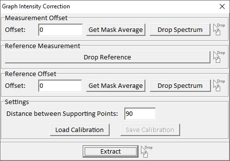
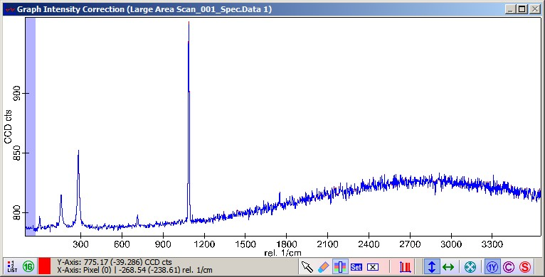
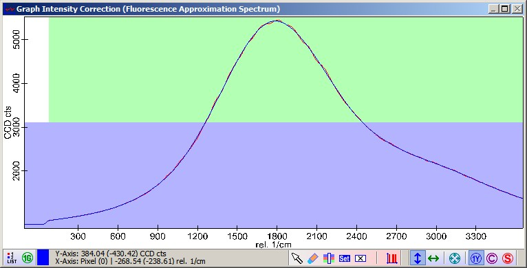

|
描述
在某些情况下，CCD 检测到的信号响应并非对所有像素都相同。这种不完美尤其可以在拉曼光谱包含高荧光背景时看到。CCD 探测器内部的光学标准具效应和用于减少瑞利光的光学滤波器可能导致此问题。为了消除这种不完美，此对话框使用参考测量来确定校正曲线。
另请参阅
输入与结果
输入：
一个图谱对象，可以是单光谱或多光谱对象（例如图像图谱）。这是将被校正的对象。
结果：
具有相同维度的图谱对象
用户界面

测量偏移量 - 偏移（编辑框）
在此您可以手动定义偏移量，该偏移量将在计算前减去。
测量偏移量 - 获取掩模平均值（按钮）
如果按下此按钮，当前光谱和所选掩模（蓝色）将用于计算平均值。该平均值将输入到偏移编辑框中。
测量偏移量 - 放置光谱（按钮）
如果测量了暗光谱（单光谱或序列），可将其放置在此处以使用。如果按下此按钮，偏移量将被删除。
参考测量 - 放置光谱（按钮）
将参考光谱放置在此处（例如荧光光谱）。计算平均值并显示在预览窗口中。
参考偏移量 - 偏移（编辑框）
在此您可以手动定义参考光谱的偏移量，该偏移量将在计算前减去。
参考偏移量 - 获取掩模平均值（按钮）
如果按下此按钮，平均参考光谱和所选掩模（蓝色）将用于计算平均值。该平均值将输入到偏移编辑框中。
参考偏移量 - 放置光谱（按钮）
如果测量了暗光谱（单光谱或序列），可将其放置在此处以使用。如果按下此按钮，偏移量将被删除。
设置 - 支撑点间距（编辑框）
从平均参考光谱计算平滑样条函数。样条支撑点之间的距离可以通过此编辑框设置。
设置 - 加载/保存校准（按钮）
在此您可以将校准保存到硬盘或从硬盘加载。您可以将其重用于所有在相同条件下获取的未来测量（相同激光、相同光谱位置、相同 CCD 设置）。
提取（按钮）
校正后的数据将导出到项目中。如果在相同条件下获得了多个测量，您可以将所有测量一次性放置在此按钮上。
预览窗口

在上面的预览图谱中显示了原始数据和校正后的数据。通常情况下，对于噪声光谱您不会看到太大的差异。

在此预览图谱中，您可以看到平均参考光谱和样条拟合。两者的比率是用于数据的校正。
绿色掩模定义用于计算此比率的区域。如果未设置绿色掩模，校正因子将为 1。
请注意，掩模将被视为一个没有间隙的大区域。
蓝色掩模可用于使用"获取掩模平均值"按钮定义参考的偏移量。